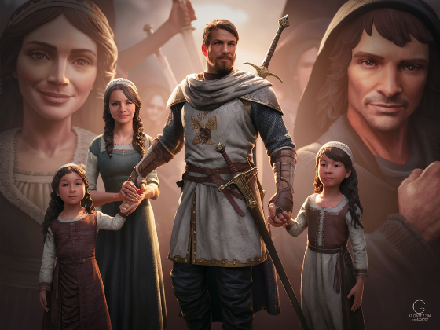

Una sociedad guerrera
La Edad Media fue una época marcada por las guerras. En la península Ibérica, tanto los diferentes reinos cristianos entre sí (León, Castilla, Navarra, Aragón) como frente a los musulmanes que habían invadido la península en el año 711, sostenían conflictos y guerras con frecuencia.

Este es el contexto en el que vivió el Cid histórico, un noble castellano, y en el que se crearía la obra de ficción que se basó en su vida, el Poema de mío Cid.
En este mundo de guerras, fronteras y conflictos, no es de extrañar que se idealizara la figura del guerrero, hasta adquirir algunos de ellos la categoría de "héroes" gracias a la literatura. Como ya hemos señalado, la guerra y su principal protagonista, el caballero, es uno de los temas más frecuentes de la literatura medieval.
La poesía épica. El mester de juglaría
El Poema de mío Cid pertenece al género de la poesía épica o cantar de gesta: obras narrativas escritas en verso que cuentan las hazañas de un héroe.
Ya hemos visto que las obras se transmitían de forma oral. Los encargados de contar las historias de los héroes épicos eran los juglares. Para referirse a las obras que transmitían los juglares se habla de mester de juglaría. La palabra "mester" significa 'oficio'. Hablamos, por tanto del oficio o trabajo de los juglares.

Los juglares, hombre y mujeres, se movían de población en población y ofrecían un espectáculo variado para entretener a la gente. Cantaban, bailaban, hacían malabares y recitaban los cantares de gesta.
El Poema de mío Cid
El Poema de mío Cid es el cantar de gesta más importante de la literatura castellana. Cuenta las aventuras y hazañas del noble burgalés Rodrigo Díaz de Vivar, conocido como el Cid. Fue compuesto alrededor del año 1200.
Es una obra extensa de casi cuatro mil versos. Como la mayoría de obras literarias de la Edad Media es anónima y se transmitió de forma oral. Ha llegado hasta nosotros gracias a una única copia manuscrita fechada en el año 1207.
El poema se estructura en tres cantares:
Cantar del destierro
El rey Alfonso vi destierra a don Rodrigo, el Cid, injustamente. Se rompe la relación de vasallaje: el Cid no sirve al rey y el rey no protege al Cid. Don Rodrigo tiene que abandonar sus tierras y su familia y acompañado de algunos de sus fieles vasallos se dirige fuera de Castilla y comienza a ganar batallas y acumular botines. Su fama de guerrero crece.
Cantar de las bodas
Conquista el reino de Valencia y la cede al rey para reconciliarse con él. Alfonso VI le concede el perdón y manda casar a las hijas del Cid, doña Elvira y doña Sol, con los duques de Carrión. Don Rodrigo recupera su honra y su posición social. Sin embargo, los condes resultan ser unos cobardes y se ven humillados por el valor del Cid y sus guerreros.
Cantar de la afrenta de Corpes
Para vengarse del Cid, los condes de Carrión maltratan y abandonan a sus esposas en el robledal de Corpes. Además, huyen con el dinero de la generosa dote que el Cid les dio por casarse con sus hijas. El Cid pide justicia al rey que obliga a los infantes a devolver la dote, guerreros del Cid derrotan a los condes en un duelo y las hijas se casan de nuevo con los infantes de Navarra y Aragón. De esta forma, al final de la obra, el Cid alcanza la mayor honra para él y su familia.
Otros rasgos destacables de la obra serían:
Llamadas al público y epíteto épico
Al ser compuesto con la mirada puesta en la recitación oral delante de un público, en el poema encontramos numerosas fórmulas que apelan, se dirigen, a esta audiencia: "allí vierais", "ved", "oíd", "sabed", "bien oiréis lo que dirá"...
También abundan los llamados epítetos épicos. Son frases fijas para nombrar a los personajes y dar alguna de sus características más sobresalientes. Ejemplos: al Cid se le dice "el que en buena hora tomó espada". "el que tomó Valencia", "el Campeador", "mío Cid Campeador"...
Realismo
En otras zonas europeas, como en Francia o Alemania, es muy normal que los poemas de gesta contengan elementos fantásticos y sobrenaturales. En el Poema de mío Cid, apenas aparecen elementos fantásticos y los hechos se narran de forma realista.
El tema de la honra
La honra en la Edad Media estaba relacionada con la fama y con el estatus social. Era un elemento muy valorado por la clase noble. El Poema comienza con el Cid en su punto más bajo con el destierro y la pérdida de sus tierras y su posición social en Castilla. Poco a poco, a través sobre todo de su actividad guerrera y sus habilidades políticas, va recuperando su honra hasta llegar al punto más alto con la reconciliación con el rey y el matrimonio de sus hijas dentro de la realeza.
El personaje del Cid
El Poema presenta una imagen idealizada del Cid, es decir, se nos describe como un noble sin apenas defectos y plagado de virtudes: es valiente, prudente e inteligente. Destaca entre todos los aspectos su fidelidad al rey; el Cid es el vasallo leal, que no deja de ser fiel a su señor, el rey, ni siquiera cuando este lo maltrata desterrándolo. Esto va en consonancia con una defensa de la estructura social de la época, el feudalismo, basado, como ya hemos visto, en una relación de dependencia/protección entre vasallo y señor.
También aparece idealizada su dimensión humana. Nuestro héroe es un buen cristiano y un excelente padre y esposo. También es un hombre compasivo y justo.

Un aspecto que debemos siempre tener en cuenta cuando tratemos con obras y personajes literarios es que estamos ante elementos ficticios que han sido inventados por artistas. De este modo, aunque existió realmente un personaje histórico llamado Rodrigo Díaz de Vivar, conocido como el Cid Campeador, no debemos pensar que este fue igual que el protagonista del poema. Tenemos que diferenciar entre personajes históricos y personajes de ficción.
Repasamos lo aprendido a través de un juego
Observe las letras, identifique y rellene las palabras que faltan.
Tiene 30 segundos para contestar